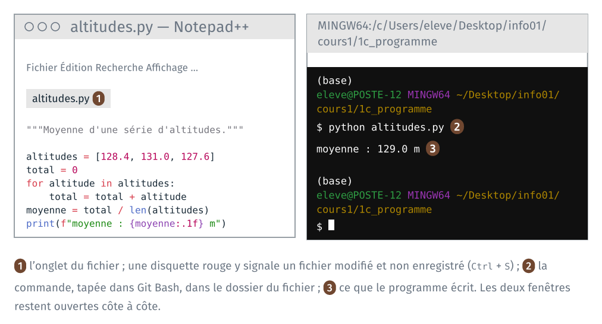

TD 1c — Écrire et lancer un programme#
Note
Les fichiers des TD de la séance sont dans l’archive info01-cours1_v2.zip.
Version 2 du cours 1 : proposition de travail pour 2027-2028. Ce guide reprend le programme et la session interactive du TD 1b de 2026, sans VS Code : le programme s’ouvre dans Notepad++ et se lance dans Git Bash.
Un programme Python est un fichier texte, et python est un programme en
ligne de commande. Le TD cherche d’abord quel fichier la commande python
lance, puis rend disponible dans Git Bash celui d’Anaconda, par un réglage
fait une fois par poste. Il ouvre ensuite le programme dans un éditeur de
texte, Notepad++, le fait exécuter depuis Git Bash, le modifie et le
relance. Il lance ensuite un script de commandes, puis refait le calcul
ligne à ligne dans une session interactive. Il dure une vingtaine de
minutes.
Étape |
Objectif |
Ce qu’on fait |
|---|---|---|
1 |
identifier le programme qu’une commande lance |
trouver quel python la commande lance |
2 |
rendre un programme accessible depuis le terminal |
rendre le Python d’Anaconda disponible dans Git Bash, une fois par poste |
3 |
lire un programme Python dans un éditeur |
ouvrir |
4 |
exécuter un programme depuis le terminal |
le lancer dans Git Bash |
5 |
relier le fichier enregistré à ce qui s’exécute |
le modifier, et le relancer avant et après l’enregistrement |
6 |
enchaîner des commandes dans un script |
lancer un script de commandes, si le temps le permet |
7 |
exécuter du Python ligne à ligne, en interactif |
refaire le calcul dans une session interactive de Python |
Sur un poste où l’étape 2 est déjà faite, l’invite de Git Bash commence
par (base), et type -a python affiche en premier le Python d’Anaconda :
faire l’étape 1, puis passer à l’étape 3.

1 · Quel python la commande lance#
À faire : afficher le fichier que lance la commande
python; trouver lepython.exed’Anaconda dans l’explorateur ; le lancer par son chemin complet.À obtenir :
Python 3.suivi de la version d’Anaconda, lancé par le chemin de son fichier.
Étape à vérifier sur un poste de la salle avant la version finale du guide.
La commande python#
Dans Git Bash, ouvert au TD 1b dans 1b_terminal/ :
cd ../1c_programme
python --version
type -a python
python --version affiche la version du Python que la commande lance.
type -a python affiche le fichier lancé, puis les autres fichiers de ce
nom, dans l’ordre où bash les trouve. bash cherche le fichier dans une liste
de dossiers, la variable PATH, et lance le premier qu’il trouve.
Sur les postes de la salle, avant l’étape 2, ce n’est pas le Python
d’Anaconda : un Python 2.7, installé à part dans C:\Python27, ou aucun.
Dans ce dernier cas, Git Bash affiche bash: python: command not found, ou
un message qui renvoie au Microsoft Store.
À noter : la version affichée, et le chemin du fichier lancé.
Le Python d’Anaconda, dans l’explorateur#
Anaconda est installé sur le poste, dans C:\ProgramData\anaconda3.
C:\ProgramData est un dossier masqué, que l’explorateur n’affiche pas :
taper ce chemin dans sa barre d’adresse, puis Entrée. Le dossier contient python.exe, le programme de l’interpréteur.
Lancer un fichier par son chemin#
Un nom de commande qui contient un / désigne un fichier précis : bash le
lance sans chercher dans PATH. Dans Git Bash, le chemin de python.exe
s’écrit avec des /, et C: devient /c :
/c/ProgramData/anaconda3/python.exe --version
Vérification : la commande affiche Python 3. suivi de la version
installée par Anaconda.
Si le temps le permet, la même chose depuis le dossier du fichier, où ./
désigne le dossier courant, puis retour au dossier du TD :
cd /c/ProgramData/anaconda3
./python.exe --version
cd ~/Desktop/info01/cours1/1c_programme
Tout programme se lance ainsi, par le chemin de son fichier. Une commande
sans /, comme python, ls ou cp, désigne le premier fichier de ce nom
trouvé dans PATH.
2 · Le Python d’Anaconda dans Git Bash, une fois par poste#
À faire : configurer conda dans Git Bash ; fermer et rouvrir Git Bash ; vérifier quel python la commande lance.
À obtenir : l’invite commence par
(base);type -a pythonaffiche en premier le Python d’Anaconda.
Configurer conda dans Git Bash#
source /c/ProgramData/anaconda3/etc/profile.d/conda.sh
conda init bash
source rend la commande conda disponible dans ce terminal. conda init bash écrit l’instruction équivalente dans le fichier ~/.bash_profile, que
Git Bash lit à chaque ouverture : elle active conda, qui met les dossiers
d’Anaconda en tête de PATH. Il affiche une ligne par fichier examiné,
no change ou modified, puis :
==> For changes to take effect, close and re-open your current shell. <==
Fermer Git Bash (exit, ou la croix de la fenêtre), et le rouvrir dans
1c_programme, par le clic droit du TD 1b.
Vérification : la première ligne de l’invite est (base). Puis :
python --version
type -a python
ls -a ~
python --version affiche Python 3. suivi de la version installée par
Anaconda. type -a python affiche en premier le fichier d’Anaconda, puis
celui de l’étape 1 s’il existe. ls -a ~ liste le dossier personnel, et
parmi les noms, .bash_profile : un fichier caché, écrit par
conda init bash.
Le réglage reste d’une séance à l’autre : les postes de la salle gardent le dossier personnel. Il se refait sur un autre poste.
Si ça bloque#
Si le réglage échoue, quelle qu’en soit la raison, faire le Python de la
séance dans l’invite de commandes d’Anaconda : menu Démarrer, « Anaconda
Prompt ». conda y est actif sans réglage, et python altitudes.py s’y tape
de la même façon, après cd Desktop\info01\cours1\1c_programme. Les
chemins s’y écrivent avec des \. Prévenir l’enseignant ; le réglage de
Git Bash se refera au cours 2.
sourceafficheNo such file or directory. Anaconda est installé dans un autre dossier sur ce poste. Essayersource /c/Users/$USERNAME/anaconda3/etc/profile.d/conda.sh, ou prévenir l’enseignant.conda init bashécritneeds sudo, ou une fenêtre de Windows demande des droits d’administrateur. Fermer la fenêtre par « Non ». Écrire la ligne à la main, dans le seul fichier du dossier personnel, puis fermer et rouvrir Git Bash :echo 'eval "$(/c/ProgramData/anaconda3/Scripts/conda.exe shell.bash hook)"' >> ~/.bash_profile
Chaque nouveau Git Bash affiche l’aide de
cygpath(Usage: cygpath …), puisbash: : No such file or directory. L’environnementbaseest activé quand même : le message vient d’uncygpathfourni par Anaconda, qui échoue sous Git Bash. Pour le faire disparaître, taper une fois, puis rouvrir Git Bash :sed -i '1i cygpath() { /usr/bin/cygpath "$@"; }' ~/.bash_profile
3 · Ouvrir le programme dans Notepad++#
À faire : ouvrir
cours1\1c_programme\altitudes.pydans Notepad++.À obtenir : le programme affiché, en couleur.
Lancer Notepad++ (menu Démarrer, « Notepad++ »).
Menu Fichier, Ouvrir…, aller dans
Bureau\info01\cours1\1c_programme, et choisiraltitudes.py.
Le fichier compte huit lignes : une chaîne de documentation, une ligne vide, puis six lignes de code.
"""Moyenne d'une série d'altitudes, à la main plutôt qu'avec sum()."""
altitudes = [128.4, 131.0, 127.6]
total = 0
for altitude in altitudes:
total = total + altitude
moyenne = total / len(altitudes)
print(f"moyenne : {moyenne:.1f} m")
À noter : les couleurs, et le nom du langage affiché en bas à gauche de la fenêtre de Notepad++.
4 · Lancer le programme dans Git Bash#
À faire : placer Git Bash dans
1c_programme/;python altitudes.py.À obtenir :
moyenne : 129.0 m.
Dans Git Bash, rouvert dans 1c_programme/ à l’étape 2 :
ls
python altitudes.py
ls affiche altitudes.py et commandes.sh. La commande python altitudes.py lance
l’interpréteur Python, qui lit le fichier et l’exécute :
moyenne : 129.0 m
Le programme n’écrit qu’une ligne, celle du print final. La moyenne de
128,4, 131,0 et 127,6 vaut bien 129,0.
Vérification : ls après l’exécution affiche les deux mêmes
fichiers. Lancer un programme Python ne crée aucun fichier.
Si Git Bash affiche python: command not found, l’étape 2 n’est pas faite
sur ce poste. Si Python affiche can't open file … No such file or directory, le dossier courant n’est pas 1c_programme : lire
l’invite, et refaire le cd.
5 · Modifier, relancer#
À faire : ajouter une altitude à la liste, relancer sans enregistrer, puis enregistrer et relancer.
À obtenir :
moyenne : 130.1 maprès l’enregistrement.
Dans Notepad++, ajouter
133.2à la liste :altitudes = [128.4, 131.0, 127.6, 133.2]
Ne pas enregistrer. L’onglet du fichier porte une disquette rouge : le fichier affiché diffère du fichier enregistré.
Dans Git Bash, relancer : flèche vers le haut, qui rappelle la commande précédente, puis
Entrée.À noter : la moyenne affichée.
Dans Notepad++, enregistrer :
Ctrl+S. La disquette redevient bleue.Relancer dans Git Bash.
Vérification :
moyenne : 130.1 m
La moyenne des quatre altitudes vaut 130,05, arrondie à une décimale par
:.1f.
6 · Lancer un script de commandes, si le temps le permet#
À faire : ouvrir
commandes.shdans Notepad++ ; le lancer parbash commandes.sh; le relancer.À obtenir : les pages web du TD 1b copiées dans
copies/, puis la moyenne du programme.
Un script est un fichier texte qui contient des commandes. bash les lit
et les exécute dans l’ordre, comme si on les tapait. Dans Notepad++, ouvrir
1c_programme\commandes.sh :
# Commandes du TD 1b, puis le programme du TD 1c.
# Lancer depuis 1c_programme : bash commandes.sh
mkdir -p copies
cp ../1b_terminal/depart/*.html copies/
ls copies
python altitudes.py
Une ligne qui commence par # est un commentaire, que bash ne lit pas.
mkdir -p crée le dossier copies, sans erreur s’il existe déjà. La
dernière ligne lance le programme du TD : python est une commande comme
ls ou cp.
Dans Git Bash, dans 1c_programme/ :
bash commandes.sh
Vérification : Git Bash affiche la liste des quatre pages web copiées, puis la moyenne de l’étape 5.
auld_lang_syne_brut.html raven_brut.html
auld_lang_syne_style.html raven_style.html
moyenne : 130.1 m
Relancer la commande, par la flèche vers le haut puis Entrée : la sortie
est la même. Le script refait le travail en une commande, aussi souvent
qu’il le faut. L’équivalent pour l’invite de commandes est un fichier
.bat, en annexe.
7 · Python en interactif#
À faire : ouvrir une session interactive de Python ; y refaire le calcul ligne à ligne ; la quitter.
À obtenir :
129.0affiché par la session, puis le retour à l’invite de Git Bash.
Dans Git Bash, taper python sans nom de fichier : l’interpréteur ouvre une
session interactive. Chaque ligne tapée est lue, exécutée, et son résultat
affiché aussitôt.
$ python
Python 3.12.14 (main, Sep 2 2026, 23:27:36) [GCC 15.3.0] on linux
>>> altitudes = [128.4, 131.0, 127.6]
>>> total = 0
>>> for altitude in altitudes:
... total = total + altitude
...
>>> total
387.0
>>> total / len(altitudes)
129.0
>>> exit()
Session relevée sous Linux ; la première ligne, qui donne la version de Python, diffère sur les postes de la salle.
Les trois chevrons >>> sont l’invite de Python : la session attend une
ligne de Python. Les commandes de Git Bash ne s’y tapent pas. Les trois points ...
marquent la suite d’un bloc commencé, ici la boucle : taper quatre espaces
avant total = total + altitude, puis Entrée sur une ligne vide pour
finir le bloc. total s’affiche sans print : la session affiche la
valeur de chaque expression tapée.
exit() quitte la session ; l’invite de Git Bash revient.
Vérification : après exit(), la ligne attend une commande après $.
Si python seul n’affiche pas l’invite >>> et semble bloqué, taper
Ctrl + C, puis winpty python. À défaut, faire la session dans l’invite
de commandes d’Anaconda. [À vérifier sur un poste de la salle.]
Si une commande de Git Bash, comme ls, est tapée dans la session Python,
Python affiche NameError: name 'ls' is not defined. Lire l’invite avant
de taper : $ pour Git Bash, >>> pour Python.
Ce que le TD fait constater#
À lire après avoir fait les étapes.
Une commande désigne un fichier. python, comme ls ou cp, est le
nom d’un fichier exécutable. bash le cherche dans les dossiers de PATH, dans
l’ordre, et lance le premier qu’il trouve. Un chemin complet, qui contient un
/, lance un fichier précis sans cette recherche. Deux Python peuvent donc
être installés sur le même poste, et la commande python n’en lance qu’un :
le premier trouvé.
Un réglage écrit dans un fichier caché. conda init bash a écrit dans
~/.bash_profile, que Git Bash lit à chaque ouverture : d’où le (base),
et le python d’Anaconda. L’activation de conda met les dossiers
d’Anaconda en tête de PATH : son python.exe est alors trouvé le premier.
Le cours 2 ouvre le même Git Bash dans l’éditeur de code, qui lit le même
fichier.
Un programme est un fichier texte. Notepad++ affiche altitudes.py
comme les fichiers .css et .html du TD 1a : il reconnaît l’extension
.py, et colore le code Python. Les couleurs ne sont pas dans le
fichier. N’importe quel éditeur de texte sert à écrire un programme ; le
cours 2 installe un éditeur de code, qui ajoute d’autres services.
L’interpréteur lit le fichier enregistré. À l’étape 5, la moyenne ne
change pas tant que le fichier n’est pas enregistré : python lit le
fichier sur le disque. Le texte affiché par Notepad++ n’y est qu’une fois
enregistré.
Un script garde des commandes. commandes.sh refait en une commande
ce que le TD 1b a fait ligne à ligne, et se relance à l’identique. bash lit
le script comme python lit altitudes.py : les deux sont des
interpréteurs, l’un de commandes, l’autre de Python. python étant une
commande, un script peut lancer un programme Python.
Un programme, une session. Le programme lancé en entier n’affiche que
ce que ses print écrivent, et se relance à l’identique. La session
interactive affiche la valeur de chaque ligne, et ne garde rien sur le
disque. Un notebook, à la partie 3, réunit les deux : du code enregistré
dans un fichier, exécuté morceau par morceau, avec les résultats affichés.
Annexe · Le script pour l’invite de commandes#
Dans l’invite de commandes, cmd, un script est un fichier .bat. Le même
travail que commandes.sh s’y écrit avec les commandes de cmd, et des \
dans les chemins. [À vérifier sur un poste de la salle : ce fichier n’a pas
été exécuté.]
rem Commandes du TD 1b, puis le programme du TD 1c.
rem Lancer depuis 1c_programme : commandes.bat
if not exist copies mkdir copies
copy ..\1b_terminal\depart\*.html copies\
dir /b copies
python altitudes.py
rem commence un commentaire. if not exist copies mkdir copies crée le
dossier seulement s’il n’existe pas. Dans l’invite de commandes, le fichier
se lance en tapant son nom, commandes.bat, depuis le dossier
1c_programme. La dernière ligne demande que python soit disponible dans
l’invite, comme dans l’invite de commandes d’Anaconda.